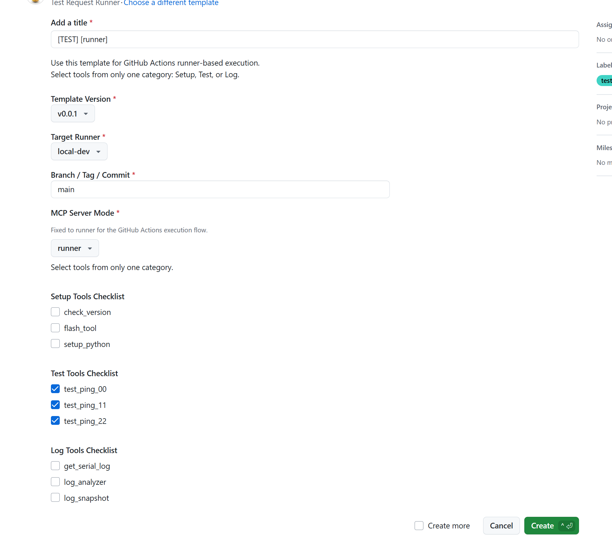
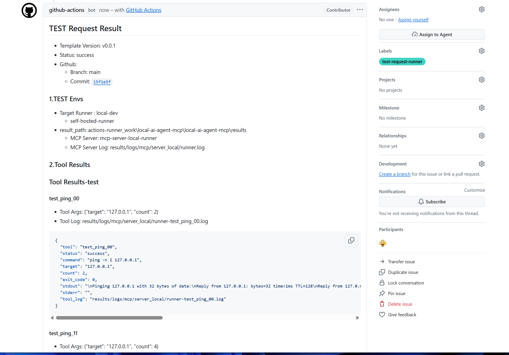

Automation Design
Scope
- CI automation
- CD automation
- CT automation
- GitHub Issue based execution paths
- direct and runner flow split
CI/CD/CT Automation
Scope
- CI automation
- Pull Request, Review, and Actions follow-up
- CD automation
- workflow based delivery path
- CT automation
- Local MCP tool based test execution
- JSON, log, and comment trace
GitHub Issue Based Entry
| Request Type | Label | Template | Execution Path | Main Purpose |
|---|---|---|---|---|
| Runner TEST Request | test-request-runner |
test_request_runner.yml |
GitHub Actions -> self-hosted runner | runner based automated test execution |
| Direct TEST Request | test-request-direct |
test_request_direct.yml |
Jenkins -> direct MCP execution | direct local test execution |
| General Issue / PR | normal workflow | standard templates | GitHub MCP Server, AI Agent, GitHub Actions | review, update, tracking |
Automation Components
- GitHub Actions
- runner TEST Request execution
- self-hosted runner integration
- artifact and comment trace
- Jenkins
- direct TEST Request execution
- webhook trigger
- requested ref checkout
- Python Bridge
- issue body parsing
- selected tool mapping
- Local MCP Server call
- JSON and Markdown result generation
Issue Based Flow
runner test request issue
-> GitHub Actions
-> self-hosted runner
-> Python bridge
-> mcp-server-local-runner
direct test request issue
-> Jenkins
-> Python bridge
-> mcp-server-local-direct
GitHub Issue / PR
-> GitHub Actions or Jenkins
-> Python bridge
-> Local MCP Server
-> JSON / log / comment
-> GitHub traceability
Main Flows
Direct MCP Flow
AI Agent or local client
-> VS Code MCP Gateway
-> mcp-server-local-direct
-> local tools
-> log files + tool result payload
Runner Test Request Flow
GitHub Issue
-> GitHub Actions workflow
-> self-hosted runner
-> mcp.scripts.run_test_request
-> mcp-server-local-runner
-> selected tools
-> results JSON + logs
-> GitHub Issue comment
Example:


Related:
.github/workflows/test_request_local.yaml.github/ISSUE_TEMPLATE/test_request_runner.yml
Direct Test Request Flow
GitHub Issue
-> Jenkins webhook trigger
-> mcp.scripts.run_test_request
-> mcp-server-local-direct
-> selected tools
-> results JSON + logs
-> GitHub Issue comment
Related:
Jenkinsfile.github/ISSUE_TEMPLATE/test_request_direct.yml
Component Details
VS Code MCP Gateway
- VS Code internal
- MCP Server connection
- tool discovery
- tool routing
Reference:
Local MCP Server
- local process
- build, flash, test, log tools
- direct mode
- runner mode
Reference:
GitHub MCP Server
- local process + GitHub API integration
- Issue, Pull Request, Review, Actions access
- no local execution hosting
Reference:
Python Bridge
- repository script layer
- issue body parsing
- tool mapping
- server mode selection
- result JSON generation
- Markdown comment generation
Target scripts:
mcp/scripts/run_test_request.pymcp/scripts/make_test_result.py
Installation Locations
| Component | Location | Entry |
|---|---|---|
| VS Code MCP Gateway | VS Code internal | VS Code feature |
| Local MCP Server | Local process | Python module |
| GitHub MCP Server | Local process | GitHub API integration |
| GitHub Actions | GitHub runner | workflow |
| Jenkins | Jenkins agent | webhook trigger |
| Local AI | Local host | runtime |
| Remote AI | cloud or local CLI | provider dependent |